Profitt er kanskje det mest grunnleggende målet for enhver forretningsvirksomhet - det representerer bedriftens evne til å generere overskudd ved å levere varer eller tjenester som markedet verdsetter høyere enn kostnadene ved å produsere dem. I regnskapssammenheng er profitt ikke bare et enkelt tall, men et komplekst konsept som påvirker alt fra beskatning til utbytteutdelinger og egenkapitalendringer.
Profitt omtales noen ganger også som bunnlinje. Les mer i artikkelen om Bunnlinje.
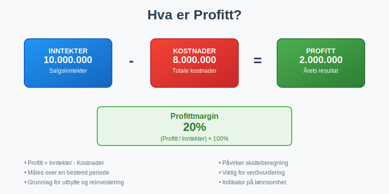
Seksjon 1: Profittens Grunnleggende Definisjon
Profitt er i sin enkleste form differansen mellom inntekter og kostnader over en bestemt periode. Denne tilsynelatende enkle formelen skjuler imidlertid mange nyanser og kompleksiteter som er avgjørende for korrekt forståelse og beregning.
1.1 Grunnleggende Profittformel
Profitt = Inntekter - Kostnader
Men i praksis må vi skille mellom ulike typer profitt og forstå hvordan de beregnes:
- Bruttoprofi tt = Salg - Varekostnad
- Driftsresultat = Bruttoprofi tt - Driftskostnader
- Resultat før skatt = Driftsresultat + Finansinntekter - Finanskostnader
- Årets resultat = Resultat før skatt - Skattekostnad
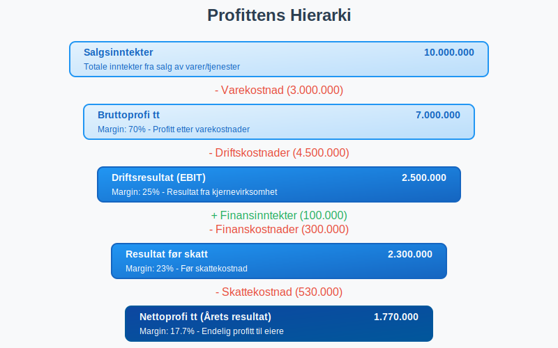
1.2 Profitt vs. Kontantstrøm
Det er viktig å forstå forskjellen mellom profitt og kontantstrøm. Profitt beregnes basert på periodiseringsprinsippet, mens kontantstrøm viser faktiske inn- og utbetalinger.
En bedrift kan ha positiv profitt, men negativ kontantstrøm på grunn av:
- Store kundefordringer
- Investeringer i varelager
- Avskrivninger som reduserer profitt uten å påvirke kontanter
Seksjon 2: Ulike Typer Profitt
2.1 Bruttoprofi tt
Bruttoprofi tt viser hvor mye virksomheten tjener på sine kjerneaktiviteter før driftskostnader:
Bruttoprofi tt = Salgsinntekter - Varekostnad
Bruttoprofi ttmargin = (Bruttoprofi tt / Salgsinntekter) × 100%
| Eksempel Bedrift | Salgsinntekter | Varekostnad | Bruttoprofi tt | Bruttoprofi ttmargin |
|---|---|---|---|---|
| Teknologiselskap | 10.000.000 | 3.000.000 | 7.000.000 | 70% |
| Handelsvirksomhet | 5.000.000 | 3.500.000 | 1.500.000 | 30% |
| Tjenestebedrift | 8.000.000 | 1.600.000 | 6.400.000 | 80% |
2.2 Driftsresultat (EBIT)
Driftsresultat eller EBIT (Earnings Before Interest and Taxes) viser profitt fra kjerneaktiviteter:
Driftsresultat = Bruttoprofi tt - Driftskostnader
Driftskostnader inkluderer:
- Lønnskostnader
- Husleie og kontorkostnader
- Avskrivninger
- Salgs- og markedsføringskostnader
- Administrative kostnader
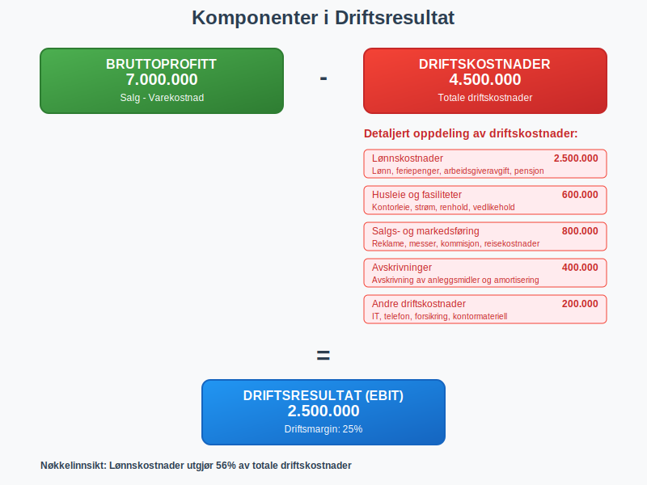
2.3 Resultat før Skatt
Resultat før skatt inkluderer finansielle poster:
Resultat før skatt = Driftsresultat + Finansinntekter - Finanskostnader
Finansinntekter:
- Renteinntekter
- Utbytte fra investeringer
- Valutagevinster
Finanskostnader:
- Rentekostnader på lån
- Bankkostnader
- Valutatap
2.4 Nettoprofi tt (Årets Resultat)
Nettoprofi tt er bunnlinjen i resultatregnskapet:
Nettoprofi tt = Resultat før skatt - Skattekostnad
Dette er det endelige overskuddet som tilhører eierne og som kan:
- Utbetales som utbytte
- Tilbakeholdes i virksomheten for reinvestering
- Brukes til å styrke egenkapitalen
Seksjon 3: Profittmarginer og Lønnsomhetsanalyse
3.1 Sentrale Lønnsomhetsmål
For å vurdere en bedrifts prestasjoner brukes ulike lønnsomhetsmål:
| Lønnsomhetsmål | Formel | Hva det måler |
|---|---|---|
| Bruttoprofi ttmargin | (Bruttoprofi tt / Omsetning) × 100% | Effektivitet i kjernevirksomhet |
| Driftsmargin | (Driftsresultat / Omsetning) × 100% | Operasjonell effektivitet |
| Nettoprofi ttmargin | (Nettoprofi tt / Omsetning) × 100% | Total lønnsomhet |
| Egenkapitalrentabilitet | (Nettoprofi tt / Gjennomsnittlig egenkapital) × 100% | Avkastning til eierne |
| Totalkapitalrentabilitet | (Driftsresultat / Gjennomsnittlig totalkapital) × 100% | Effektivitet i kapitalbruk |
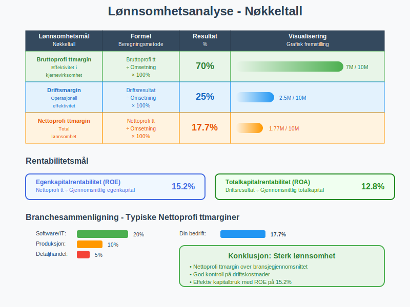
3.2 Benchmarking og Sammenligning
Profittmarginer varierer betydelig mellom bransjer:
| Bransje | Typisk Bruttoprofi ttmargin | Typisk Nettoprofi ttmargin |
|---|---|---|
| Software/IT | 70-90% | 15-25% |
| Farmasi | 60-80% | 20-30% |
| Detaljhandel | 20-40% | 2-8% |
| Produksjon | 30-50% | 5-15% |
| Restaurant | 60-70% | 3-8% |
| Bank/Finans | N/A | 15-25% |
3.3 Trend og Utviklingsanalyse
For å vurdere bedriftens utvikling over tid, bør profittmarginer analyseres over flere perioder:
- Stigende marginer: Indikerer forbedret effektivitet eller prisstyrke
- Synkende marginer: Kan tyde på økt konkurranse eller kostnadspress
- Volatile marginer: Kan indikere ustabil forretningsmodell
Seksjon 4: Faktorer som Påvirker Profitt
4.1 Inntektsside - Verdiskaping
Volum og Prissetting:
- Salgsvolum påvirket av markedsetterspørsel
- Prissetting basert på verdiproposisjon
- Rabatter og salgsfremmende tiltak
Produktmiks:
- Produkter med forskjellige marginer
- Fokus på høymarginprodukter
- Krysssalg og oppselging
4.2 Kostnadsside - Effektivitet
Faste Kostnader:
- Lønnskostnader - ofte største kostnadspost
- Husleie og fasiliteter
- Avskrivninger på utstyr og systemer
Variable Kostnader:
- Varekostnad - direkte knyttet til salg
- Provisjoner og bonuser
- Transportkostnader
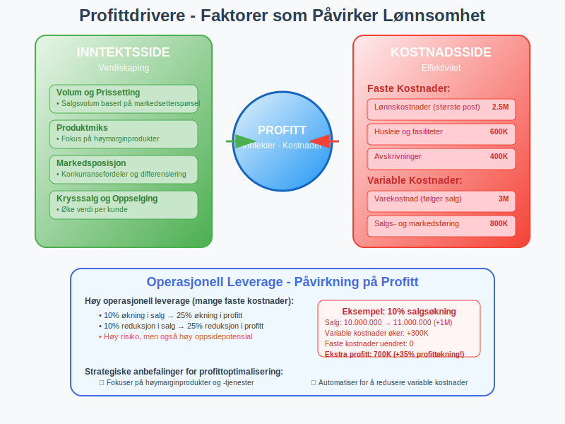
4.3 Operasjonell Leverage
Operasjonell leverage beskriver hvordan endringer i salg påvirker driftsresultatet:
Operasjonell leverage = Endring i driftsresultat % / Endring i salg %
Høy operasjonell leverage betyr:
- Store faste kostnader
- Stor påvirkning på profitt ved salgsendringer
- Høy risiko, men også høy oppsidepotensial
Seksjon 5: Profitt i Regnskapsføring
5.1 Regnskapsprinsipper for Profitt
- Inntekter føres når de er opptjent
- Kostnader føres når de påløper
- Uavhengig av betalingstidspunkt
- Kostnader knyttes til relaterte inntekter
- Sikrer korrekt profittmåling per periode
5.2 Profittens Plass i Finansrapportene
- Årets resultat som bunnlinje
- Oppbygd hierarkisk fra brutto- til nettoresultat
I Balansen:
- Årets resultat påvirker egenkapitalen
- Opptjent egenkapital akkumuleres over tid
- Nettoprofi tt er utgangspunkt for operasjonell kontantstrøm
- Justeringer for ikke-kontante poster
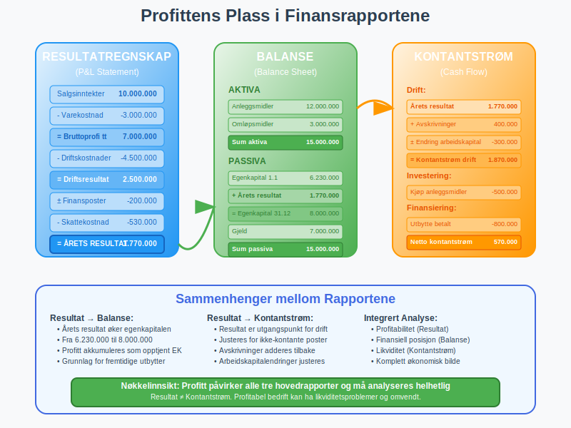
5.3 Skatteregler for Profitt
Skattemessig vs. Regnskapsmessig Profitt:
Forskjeller kan oppstå på grunn av:
- Ulike avskrivningsmetoder
- Forskjellig behandling av avsetninger
- Tidsperspektiv for inntekts- og kostnadsføring
Dette håndteres gjennom:
- Utsatt skatt
- Midlertidige forskjeller
- Permanente forskjeller
Seksjon 6: Profittanalyse og Styring
6.1 Break-Even Analyse
Break-even punktet er det salgsnivået hvor total inntekt = totale kostnader:
Break-even (enheter) = Faste kostnader / (Salgspris per enhet - Variable kostnader per enhet)
Bidragsmargin = Salgspris - Variable kostnader per enhet
| Scenario | Faste Kostnader | Bidragsmargin | Break-even Enheter |
|---|---|---|---|
| Scenario A | 500.000 | 100 | 5.000 |
| Scenario B | 750.000 | 150 | 5.000 |
| Scenario C | 500.000 | 200 | 2.500 |
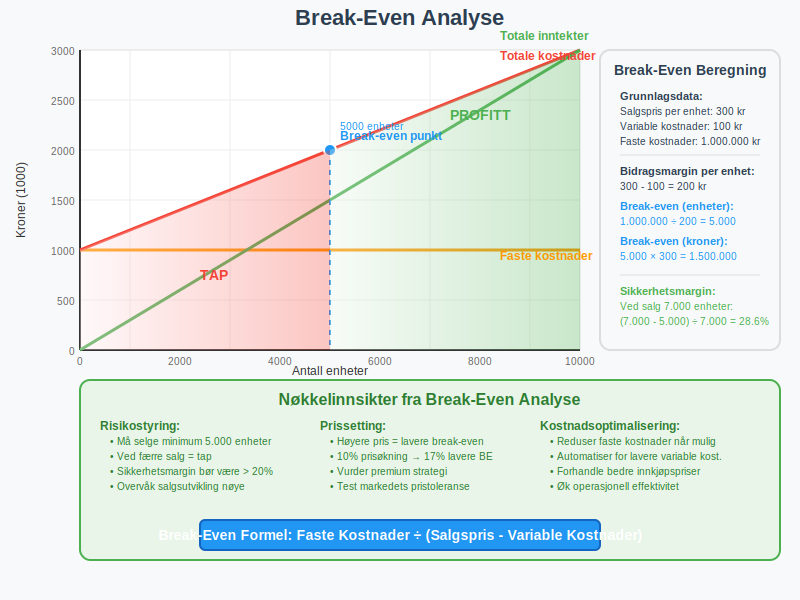
6.2 Sensitivitetsanalyse
Analyse av hvordan endringer i nøkkelvariabler påvirker profitt:
Prisendringer:
- 5% prisøkning → % økning i profitt?
- 10% prisreduksjon → % reduksjon i profitt?
Volumendringer:
- 20% økning i salgsvolum → påvirkning på profitt?
- 15% reduksjon i salgsvolum → break-even risiko?
Kostnadsendringer:
- Lønnsøkning 3% → påvirkning på marginer?
- Råvarepriser opp 8% → profitteffekt?
6.3 Marginforbedring
Strategier for økt profitabilitet:
Inntektsside:
- Premium prising basert på verdi
- Produktmiks optimering
- Krysssalg og oppselging
- Markedsekspansjon
Kostnadsside:
- Automatisering og effektivisering
- Forhandlinger med leverandører
- Lean produksjon
- Outsourcing av ikke-kjerneaktiviteter
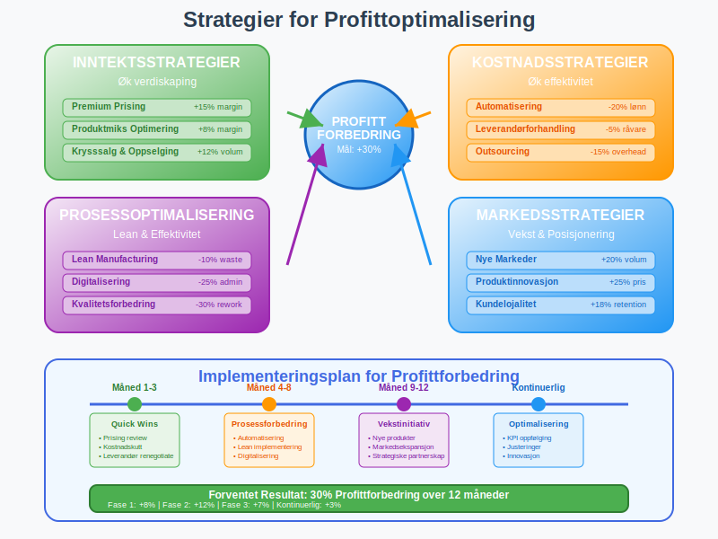
Seksjon 7: Profitt og Interessentgrupper
7.1 Eiere og Investorer
For aksjonærer er profitt avgjørende for:
- Utbytteutdelinger
- Verdivurdering av selskapet
- Avkastning på investert kapital
- Fremtidig vekstpotensial
Verdsettelsesmetoder basert på profitt:
- P/E ratio (Pris/Fortjeneste)
- EV/EBITDA multipler
- Neddiskontert kontantstrøm basert på profittanslag
7.2 Kreditorer og Långivere
Banker og kreditorer fokuserer på:
- Evne til å betjene gjeld
- Rentedekningsgrad
- Stabilitet i inntjening
- Kontantgenereringsevne
7.3 Skattemyndigheter
Skattemyndighetene bruker profitt til:
- Beregning av skattepliktig inntekt
- Transfer pricing kontroll
- Kontroll av fradragsføringer
- Vurdering av skattlyting
7.4 Ansatte og Fagforeninger
Ansatte påvirkes av profitt gjennom:
- Bonusordninger knyttet til resultat
- Jobbsikkerhet og fremtidige muligheter
- Lønnsforhandlinger
- Overskuddsdeling
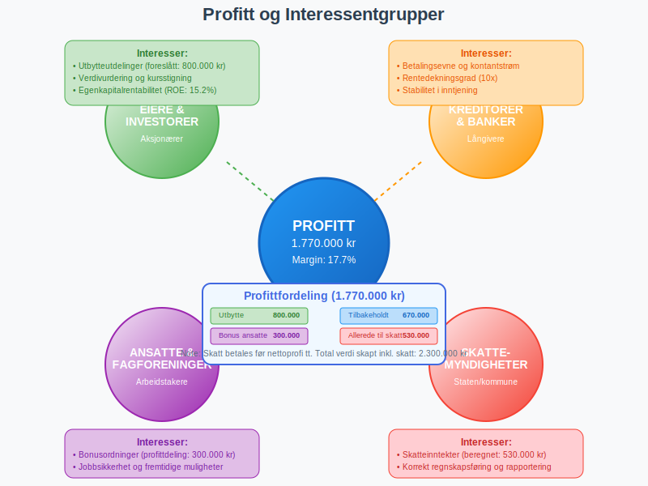
Seksjon 8: Kvalitet av Profitt
8.1 Faktorer som Påvirker Profittkvalitet
Høy profittkvalitet kjennetegnes av:
- Stabile og repeterende inntekter
- Konservative regnskapsprinsipper
- Lav andel engangsposter
- God kontantkonvertering
Lav profittkvalitet kjennetegnes av:
- Agressive regnskapspraksiser
- Store engangsinntekter
- Voksende arbeidskapital
- Avhengighet av få kunder
8.2 Røde Flagg i Profittanalyse
Advarselstegn som krever nærmere undersøkelse:
- Rask vekst i profitt uten tilsvarende kontantstrømøkning
- Plutselige endringer i regnskapsprinsipper
- Store avsetninger som reverseres
- Uforklarlige endringer i arbeidskapital
8.3 Bærekraftig Profitt
Langsiktig profitabilitet krever:
- Investeringer i forskning og utvikling
- Vedlikehold av anleggsmidler
- Kompetanseutvikling av ansatte
- Tilpasning til markedsendringer
Seksjon 9: Profitt i Ulike Bransjer
9.1 Tjenestebransjer
Karakteristikk:
- Høye bruttomarginer (60-80%)
- Lav kapitalintensitet
- Personalkostnader dominerer
- Skalerbarhet gjennom digitalisering
Profittdrivere:
- Utnyttelse av ansattes tid
- Prissetting basert på verdi
- Effektive leveranseprosesser
9.2 Produksjonsbedrifter
Karakteristikk:
- Moderate bruttomarginer (30-50%)
- Høy kapitalintensitet
- Avskrivninger betydelig kostnadspost
- Økonomisk volatilitet
Profittdrivere:
- Produksjonseffektivitet
- Kapasitetsutnyttelse
- Råvarekostnader
9.3 Handelsbedrifter
Karakteristikk:
- Lavere bruttomarginer (20-40%)
- Høy omsetningshastighet
- Varelager kritisk faktor
- Konkurranseintensiv
Profittdrivere:
- Innkjøpsbetingelser
- Vareomsetning
- Logistikkeffektivitet
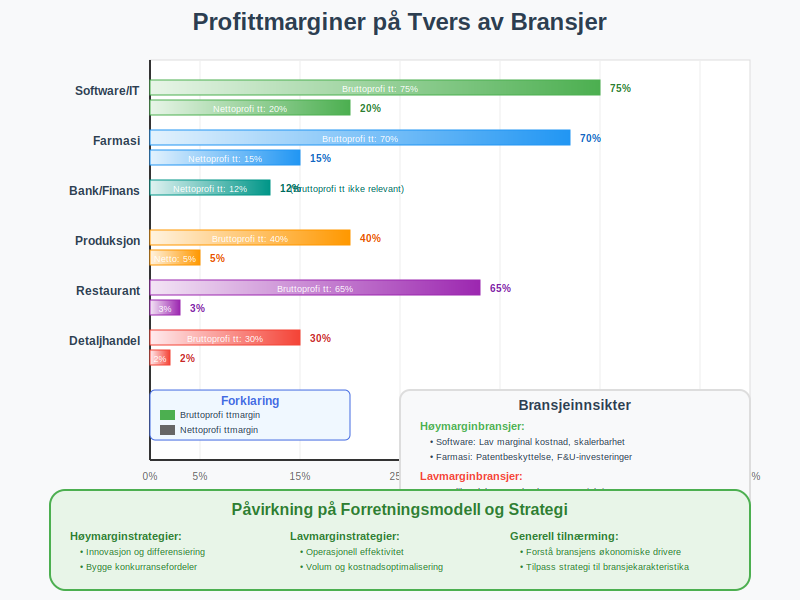
Seksjon 10: Fremtidens Profittmodeller
10.1 Digitale Forretningsmodeller
Nye måter å skape profitt:
- Abonnementsinntekter og repeterende omsetning
- Plattformøkonomi og nettverkseffekter
- Data-drevet verdiskap
- Software-as-a-Service modeller
10.2 Bærekraft og ESG
Påvirkning på profitt:
- Kostnader forbundet med miljøtiltak
- Premium for bærekraftige produkter
- Regulatoriske krav og avgifter
- Investorenes fokus på ESG-faktorer
10.3 Kunstig Intelligens og Automatisering
Effekter på profittabilitet:
- Reduserte lønnskostnader gjennom automatisering
- Økte investeringer i teknologi
- Ny verdiskap gjennom AI-drevne tjenester
- Endrede konkurranseforhold
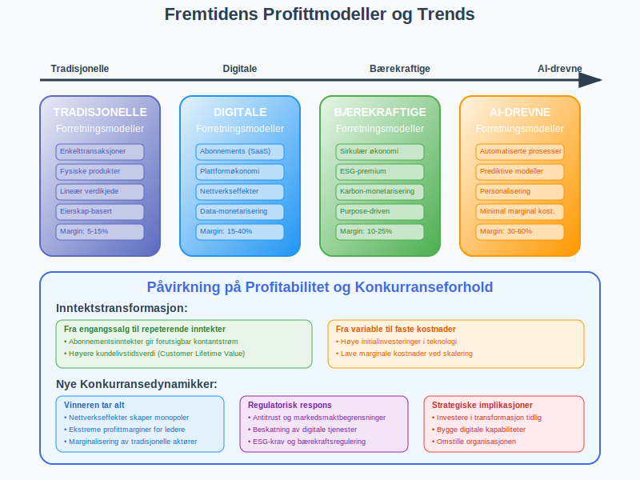
Konklusjon
Profitt er det grunnleggende målet for kommersiell virksomhet og representerer langt mer enn bare et regnskapstal. Det er et komplekst konsept som påvirker alle aspekter av bedriftsdrift - fra daglige operasjonelle beslutninger til langsiktige strategiske valg.
Nøkkelinnsikter om profitt:
- Flerdimensjonalt konsept: Profitt må forstås på flere nivåer - fra bruttoprofi tt til nettoprofi tt
- Kvalitet over kvantitet: Bærekraftig og høykvalitets profitt er viktigere enn kortsiktige profittoptimalisering
- Balanse mellom interessenter: Profitt må balanseres mot hensynet til ansatte, kunder, samfunn og miljø
- Strategisk verktøy: Profittanalyse er essensielt for strategisk planlegging og beslutningstagning
For praktisk profittledelse er det viktig å:
- Forstå bedriftens profittdrivere og hvordan de kan optimaliseres
- Implementere robuste systemer for måling og oppfølging av lønnsomhet
- Utvikle dyp forståelse av sammenhengene mellom profitt, kontantstrøm og verdiskaping
- Sikre høy profittkvalitet gjennom konservative regnskapsprinsipper og bærekraftige forretningsmodeller
I en stadig mer kompleks og konkurranseutsatt verden blir evnen til å skape, måle og styre profitt en kritisk kjernekompetanse for enhver vellykket forretningsleder. Profitt er ikke bare målet, men også kompasset som veileder bedrifter mot langsiktig suksess og verdiskaping.